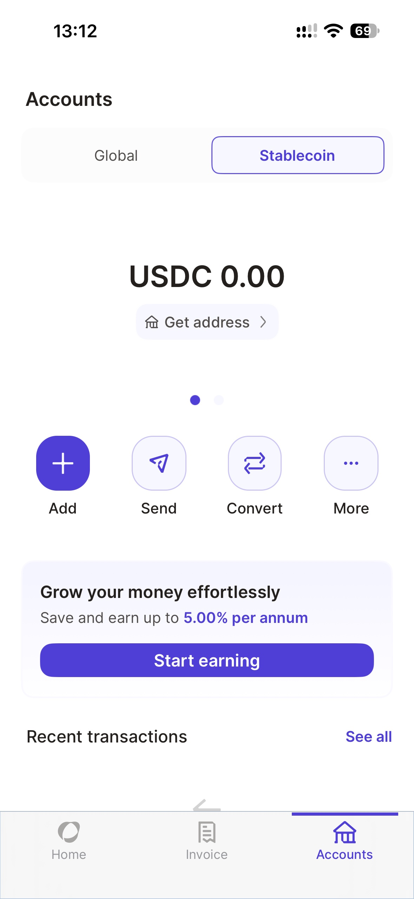
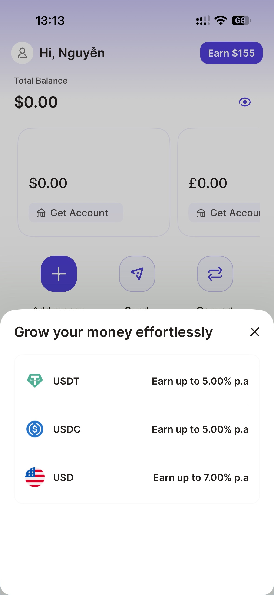

From Bounty to Breakfast: How a Vietnamese Crypto Earner Receives, Saves and Spends USDC on Raenest
The payout lands on Solana — and then the real work starts
My phone buzzes on a weekday morning in Ho Chi Minh City: a bounty payout has landed. USDC, on Solana, from a platform on the other side of the world. No bank opened. No wire form. No three-day wait. The money is simply there, seconds after it was sent, for a fraction of a cent in network fees.
Getting paid in crypto is the easy part now. The hard part — the part nobody writes about — is everything that happens next. The USDC sits in a wallet earning exactly nothing. To pay rent I have to sell it somewhere, take the local-currency hit, and hope the rate I saw is the rate I get. To save it I have to move it again. To spend it I have to move it a third time. Every move takes a fee, and every fee takes a cut of work I already did.
That is the problem Raenest is built for: not earning crypto, but living on it. Receive it, save it, spend it — in one place, without the money doing a tour of intermediaries first.
1. Why Vietnam is the right place to ask this question
Vietnam is not a fringe crypto market. It ranks fourth in the world on the Chainalysis 2025 Global Crypto Adoption Index — behind only India, the United States and Pakistan — and Chainalysis estimated the country received about $220 billion in on-chain value between July 2024 and June 2025, up 55% on the previous year. Roughly a fifth of the population owns crypto. The adoption is driven by peer-to-peer trading, retail use and a large community of builders and earners, not by institutions.
And yet the rails to live on that money barely exist here. Crypto is not legal tender, local banks do not touch it, and as of mid-2026 no domestic exchange had actually been licensed under the new digital-technology framework. So millions of Vietnamese earners hold digital dollars in wallets — and then face the same awkward question I do on payday morning: how does this become rent, savings and breakfast without leaking value at every step?
2. What Raenest actually is
Raenest is a global financial platform for individuals and businesses who earn across borders: freelancers, remote workers, creators, and businesses paying international teams. It started in Lagos in 2022, founded by Victor Alade, Sodruldeen Mustapha and Richard Oyome as an Employer of Record service, then pivoted to the problem its own users kept hitting: getting paid from abroad. Its consumer product, Geegpay, gave African freelancers virtual bank accounts in US dollars, pounds and euros, so a client in London or San Francisco could pay them as if they were local. Today Geegpay is folded into Raenest, with Raenest for Business serving companies alongside it.
The company has raised $14.3 million in total, including an $11 million Series A in February 2025 led by QED Investors. At the Series A it reported more than 700,000 individual users and over $1 billion processed; the company says it has since passed 1.5 million registered customers and $3 billion in lifetime volume. It holds licences in Nigeria as an International Money Transfer Operator and in Canada as a Money Services Business, and works through banking partners in the US and UK.
One thing to state plainly: Raenest is a fintech company, not a bank. Banking services come from licensed partners, and card services run through technology partners authorised by Visa and Mastercard. That matters later, when we get to the Vaults — the yield product is not a bank savings account, and it is not covered by deposit insurance.
3. Step one: the money arrives
The simplest receipt is also the fastest. A client or a platform pays me in USDT or USDC, and I give them my Raenest deposit address on Solana. The payment settles in seconds, and the network fee is a fraction of a cent. Raenest supports the same deposits on Ethereum, Tron, Polygon and BNB Smart Chain as well — Solana is simply the cheapest and fastest of the five, which is why it is the one I use.
When the stablecoins land, they credit at a clean 1:1 USD value. Raenest's receiving fee is a flat $1 per USDT or USDC deposit ($2 on Tron), according to its published fee pages. There are no surprise intermediary deductions, because there is no chain of intermediary banks — the payment moves from the sender's wallet to mine.
The second way money arrives is the one that matters most to crypto earners: I can fund the account with SOL, BTC or ETH. I send the crypto to my Raenest deposit address and Raenest converts it to USDC, usually within 10 to 30 minutes. The conversion takes the volatility out of the balance the moment it lands, so the SOL I earned becomes USDC I can hold, save, spend or send, without me watching a chart. The fee for a crypto deposit is 0.8%, with a minimum of 1.5 USDC, and minimum deposits are 0.02 SOL, 0.001 ETH or 0.00003 BTC.

The same account also holds ordinary money: real local account details in three currencies — a US account and routing number, a UK sort code, a European IBAN — so a client who pays by bank transfer can pay me as if I were local.
4. Step two: the idle dollars go to work
Stablecoins sitting in a wallet earn nothing. That is the problem the Stablecoin Vault solves. Move eligible USDT or USDC into a Vault and it can earn up to 7% variable APY, with earnings added daily so they compound. The minimum deposit is $100, there is no lock-up period, and you can add or withdraw at any time.
Here are the terms, from Raenest's own pages. Deposits usually process in about five minutes. Earnings start 24 hours after you deposit, are added daily, and compound automatically. There is no lock-up — you can withdraw whenever you want, and your withdrawal includes your original deposit plus your earnings. Each Vault withdrawal carries a fee of $2 + 0.3%, with the percentage part capped at $20.
Three honest caveats, because the number is only half the story. First, the rate is variable: it moves with market conditions, and "up to 7%" is a ceiling, not a promise. The rate shown in the app on any given day is the rate you earn — and it may be lower. Second, the yield comes from decentralised finance: Raenest says your stablecoins are lent to highly rated institutional borrowers, backed by short-term government securities and managed through an audited partner, Gauntlet. Returns are not guaranteed. Third, the Vault is not a bank account and is not covered by deposit insurance.
A quick illustration, clearly marked as one: if $1,000 sat in a Vault at 7% for a full year, that would be about $70 — but the rate will not sit at 7% all year, so treat that as arithmetic, not a forecast. The honest comparison is simpler: up to 7% variable beats 0% forever.
Two more boundaries worth knowing. The Vault yield applies to eligible USDT and USDC only — not to BTC, ETH or SOL, which are converted to USDC first, as above. And there is a separate USD Vault paying up to 7% per year at a fixed rate if you lock dollars for 1, 3, 6, 9 or 12 months. The Stablecoin Vault is the flexible one; the USD Vault is the fixed-term one.

5. Step three: spending it
Saving is only half the route. The other half is the morning the payout becomes breakfast.
Raenest issues virtual and physical cards — Visa cards that spend directly from your available wallet balance, where supported. The useful detail is what the card does not make you do: it can spend straight from your USDC or USDT balance, with no conversion to dollars first and no card funding fee. You do not load the card; you spend the balance. Daily spending limits go up to $20,000 depending on your KYC level. Right now there is also a Black Friday promotion running November 18–30: a $20,000 cashback pool, up to $10 back per card transaction and 1% back on eligible spends of $50 or more — the kind of small, concrete perk that makes the card the default way to spend, not a novelty.
That closes the loop my payday morning used to leave open. The bounty lands on Solana. What I do not need sits in the Vault earning yield. What I need is on the card. No P2P trade, no second exchange, no waiting for a bank transfer to clear before I can buy lunch. It is a small thing, and it is the whole point: the money stops being a project to manage and goes back to being money.
6. What it actually costs
Fees are where most "borderless money" pitches fall apart, so here are Raenest's published numbers — with the caveat that fees change, so the live schedule in the app is the authority, and every number here is a snapshot from November 2026: receiving USDT or USDC costs a flat $1 per deposit ($2 on Tron); depositing BTC, ETH or SOL costs 0.8% with a 1.5 USDC minimum; converting USD to USDC or USDT costs 0.50%, and stablecoins to other currencies 0.70%; a Vault withdrawal costs $2 + 0.3%, capped at $20; and card spending from a stablecoin balance needs no conversion first and carries no card funding fee. The network fee of the chain you deposit on sits on top — which is exactly why the Solana route matters: on Solana it is a fraction of a cent, and the cheapest path through Raenest is also the fastest one.
7. How to start
If you earn in crypto and this route sounds useful, the setup takes minutes:
- Download the Raenest app — free on the App Store or Google Play.
- Sign up using the code
community. Then open an account: tap Accounts, switch from the Global tab to the Stablecoin tab, tap USDC and follow the prompt to create your wallet. A USDT wallet works the same way. - Get your referral link. Tap Earn $155 in the app to get your unique Raenest referral code or link — you will need it if you enter the bounty, and it is how the people you bring in get tracked.
- Use the features for real. Receive a stablecoin payment, try a Vault deposit, spend with your card. Take screenshots as you go and blur anything sensitive — they double as proof that you actually used the product.
- Join the Raenest WhatsApp community — it is a requirement for bounty participants.
Then, if you want to try the bounty yourself: publish your piece, tag @RaenestApp and your Superteam region, use #StablecoinsonRaenest and #RaenestBounty, and submit on Superteam Earn before December 13, 2026. Twenty-five creators win a share of $13,000 USDC — the top five split $6,400, and twenty more win $330 each in a random draw.
My referral link is here — sign up through it and make your first transaction, and we both move up the board: https://referral.raenest.com/WzbV/i?referral_code=heu92960626
My Raenest tag: heu92960626
The bottom line
Vietnam earns crypto at world scale and lives on rails that were never built for it. What Raenest offers is not a new way to earn — it is a way to stop losing the earnings to friction: receive in seconds on Solana for a flat $1, let the idle balance earn up to 7% variable in a Vault instead of 0% in a wallet, and spend straight from the balance on a card. Each step is ordinary on its own. Together they mean the money I earned on Monday is savings on Tuesday and breakfast on Wednesday, without a tour of intermediaries in between.
That is the whole pitch, and it fits in one sentence: borderless money should behave like money.
Thanks to @RaenestApp and @SuperteamVN for the bounty, and to Superteam Earn for the arena. #StablecoinsonRaenest #RaenestBounty
Disclosure: this article was written for the Raenest Global Bounty on Superteam Earn, Track A — Written Content. Product facts are from Raenest's own site, blog and help centre as of November 2026. The up-to-7% APY is variable, applies to eligible USDT and USDC Vault deposits only, and is not guaranteed. Raenest is a fintech company, not a bank; banking services come from licensed partners.